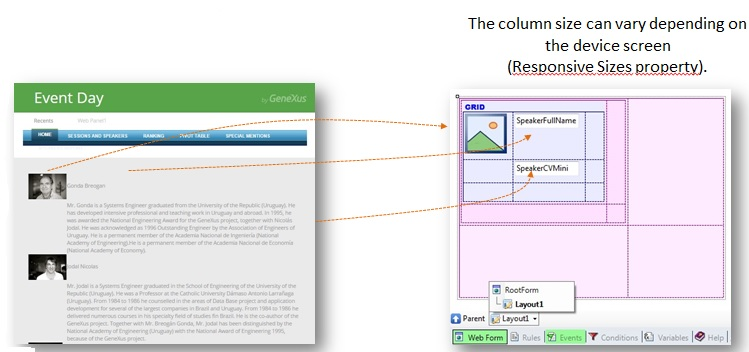

To achieve a Responsive Web Application, and optimal viewing experience, you must use the Web Abstract Editor. The main purpose of the Web Abstract editor is to assist in the design of Responsive web applications. It is based on an Abstract layout where you can drag and drop any control over a Responsive Table. The controls supported are the same controls supported by the HTML editor: • Common controls
• User controls
The abstract layout is built using the Web Abstract Editor and in contrast to an HTML layout, it helps you to accomplish a Responsive Web Design (RWD) for the application in a more intuitive manner. The control used in GeneXus to design a Responsive web application is called Responsive Table and it is the main control of the Abstract layout. Frameworks like BootStrap provide a container that they call Grid. It is similar to a table but it adapts to the width of the screen in order to allow for a Responsive web design. Therefore, this container makes it possible to display the information in a way that is readable to the user regardless of the device or screen size. The GeneXus Responsive Table is generated as a Bootstrap fluid grid. Unlike the traditional Table control, responsive tables allow working with percentage-based designs which guarantee that the elements inside them will always adapt to the device screen. You can work with different Responsive tables in the abstract layout. This means that “n” responsive tables may be nested, all displayed in the same window of the editor. 
See Also
|